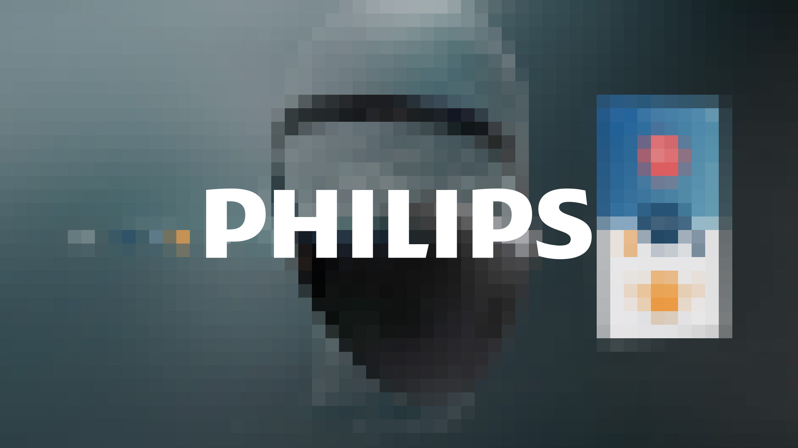

2016
Philips — Air Health
Experience design for future air health smart products.

A collaboration with Philips Design and R&D in China (2016–2018) to develop future concepts and user experiences for connected health products.
The work spanned air quality monitoring devices, next-generation wearables, and sensor-enhanced air purifying masks — exploring how a century-old health brand could design meaningful interactions around invisible data.
Confidential project.